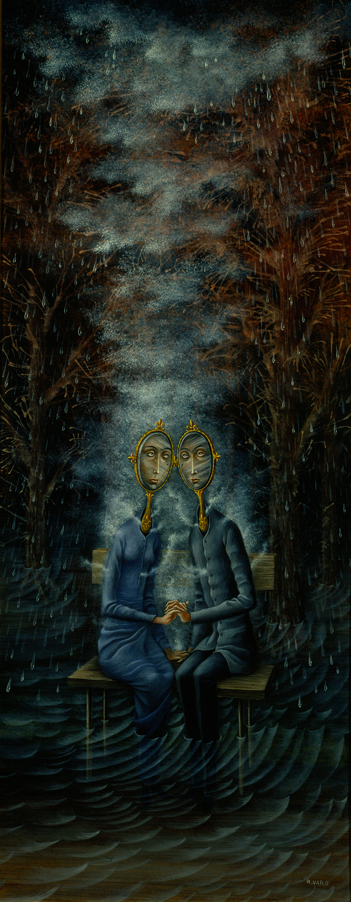

La despedida (1958)
La despedida es una obra de 1958, se trata de una de sus más destacadas pinturas. Los protagonistas son un hombre y una mujer que se están retirando; cada uno por su lado aunque en la misma dirección.
Finalmente toman pasillos por separado pero ambos se dirigen hacia la derecha. Las paredes son de un rojo y naranja que da la impresión de ladrillos y sobre el piso podemos ver la sobra de sus perfiles besándose. También un pequeño gatito saliendo de una de las puertas con una expresión sorprendida y curiosa. |
Fenómeno de ingravidez (1963)
La tierra se escapa de su eje y su centro de gravedad, al grandísimo asombro del astrónomo que trata de conservar su equilibrio encontrándose con el pie izquierdo en una dimensión y con el derecho en otra |

Los amantes (1963)
El óleo titulado ‘Los amantes’ (1963) fue realizado en el mismo año de su fallecimiento y significa el abandono de sus amoríos dispersos por una pareja estable con el músico austriaco Walter Gruen. El cuadro está inspirado en el soneto ‘La muerte de los amantes‘ del poeta Charles Baudelaire, tal y como si Varo hubiera preludiado su fallecimiento durante la mejor relación de noviazgo que tuvo. Los tortolitos/as tienen espejos en lugar de rostros porque el poema dice que son “nuestros corazones serán dos grandes antorchas que reflejarán sus dobles fulgores en nuestros espíritus, que son espejos gemelos”. No solo los personajes son prácticamente idénticos por su gran compenetración, sino que también se les muestra excitados al soltar vapores que recuerdan el permanente deseo sexual de la pareja. |

Papilla estelar (1958)
Una de sus más famosas pinturas, donde Varo representa a una mujer que habita en las alturas, alimenta a una luna creciente y dicha luna se encuentra encerrada en una jaula de aves.
La protagonista utiliza una especie de telar para capturar polvo de estrellas del cielo y lo transforma en papilla para su luna. Esta obra tiene varios significados, sobre la mujer y pensamientos femeninos; que van desde la maternidad hasta el fastidio de la sociedad patriarcal.
|
LES MURÉS, 1958.Pintura que muestra dos personajes que no tienen expresion en su rostro, sin descripcion alguna.
|
PERSONAJE, 1958.
Esta obra no tiene descripcion sin embargo, para cualquier persona podria significar una cosa diferente, tal ves un espejismo? |
Visita inesperada (1958)
La enigmática surrealista viajó a través de lo que creó con su brocha. Plasmó su alma en los trazos de sus cuadros y dejó parte de su indescifrable, pero inconfundible, misticismo en cada una de sus pinturas. Para Varo la coalición de dos mundos, uno que todos aseguramos comprender y otro que sólo pocos llegan a conocer, fue la única manera en la que sus sueños e ideas pudieron ser materializados antes de que su inspiración explotara dentro de su mente ingeniosa, libre y creativa. |
Ruptura (1955)
Bajando las escaleras encapuchada y con las manos asegurándose una a la otra, ella huye de todo lo establecido, se aleja de esas convenciones que le impiden liberar su pensamiento. Mientras da un paso, su mirada se dirige hacia los papeles que escapan por una puerta entreabierta que no sugiere nada; esto significa que sólo Remedios y esas ideas en forma de palabras sobre papel, son lo único que se atreve a salir de ahí, a cruzar los límites y a buscar la inspiración faltante. Sobre ella se encuentran las miradas expectantes de quienes deja atrás, no es necesario que la pintora los detalle demasiado para darnos cuenta de que permanecen inmóviles, cobardes y perplejos; tal vez orgullosos o celosos de la hazaña de esta valiente viajera.
|
Mujer saliendo del psicoanalista (1960)
En dicha obra la artista nos muestra a una mujer justamente saliendo de su terapia con el psicoanalista. Apenas cruza el vestíbulo se dispone a tirar una cabeza con aspecto fantasmagórico a un pequeño pozo; se trata de la cabeza de su padre.
En su otra mano tiene un pequeño cesto de basura, que contiene más desperdicios, como: un reloj, hilos y más desperdicios. Y fuera de la puerta del doctor se puede leer el nombre: Dr. FJA (Freud, Jung, Adler).
Nuevamente es posible interpretar símbolos sobre lo femenino en la mujer, rechazando lo patriarcal. El rostro de la protagonista está semi velado y su peinado parece aludir a los dos cuernos de vaca de la diosa lunar.
De ésta manera, la pintura de Remedios Varo se ubica como una meditación sobre lo femenino, en una búsqueda y descubrimiento de lo propio a través de imágenes y símbolos.
|
El trovador (1959)
El Trovador, da la impresión de ser una pieza de arte medieval, debido a los atuendos y un poco a la manera de resolver la anatomía del personaje, por parte de Remedios Varo.
El protagonista en el centro de la pintura, se transporta en el río con una barca que tiene forma de una especie de sirena. El cabello, justamente de esta criatura es utilizado como cuerdas de un instrumento musical.
El hombre, se ve rodeado de varias especies de aves en el bosque, así como de otros seres fantásticos; como la habitante en una corteza de un árbol. |
Revelación o El relojero (1955)
Revelación o el relojero, es uno de sus múltiples cuadros en los que combinó su inverosímil capacidad pictórica con sus temores y sus sueños.
“aquí se trata del tiempo, por eso hay un relojero, pero por la ventana entra una revelación, y comprende de golpe muchísimas cosas… a su alrededor hay relojes que marcan todo revelación o el relojero, es uno de sus múltiples cuadros en los que combinó su inverosímil capacidad pictórica con sus temores y sus sueños.
|
La creación de las aves (1957)
En esta pintura, Remedios Varo nos muestra un híbrido de mujer y pájaro con cara de lechuza que porta un extraño pincel conectado a un violín situado en su pecho; mientras que en la otra mano, sostiene un instrumento con un prisma que separa la luz de la ventana.
La Creación de las Aves representa la sabiduría utilizando colores primarios destilados de la atmósfera, así como la conjunción del arte, la ciencia , la alquimia y la naturaleza en una misma composición. |